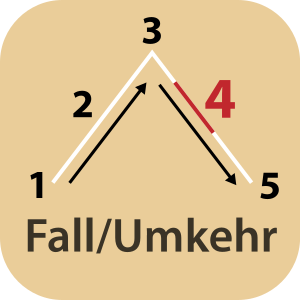

Fall/Umkehr: Vierter Akt in der Fünfaktstruktur. Die Spannung flacht langsam ab und die Geschichte steuert auf ihr Ende zu. Alle offenen oder losen Handlungsstränge werden nach und nach zusammengeführt bzw. erfahren eine Auflösung. Das Ende verzögert sich noch einmal durch überraschende Umstände, diese Wendung wird auch als retardierendes Moment bezeichnet.
